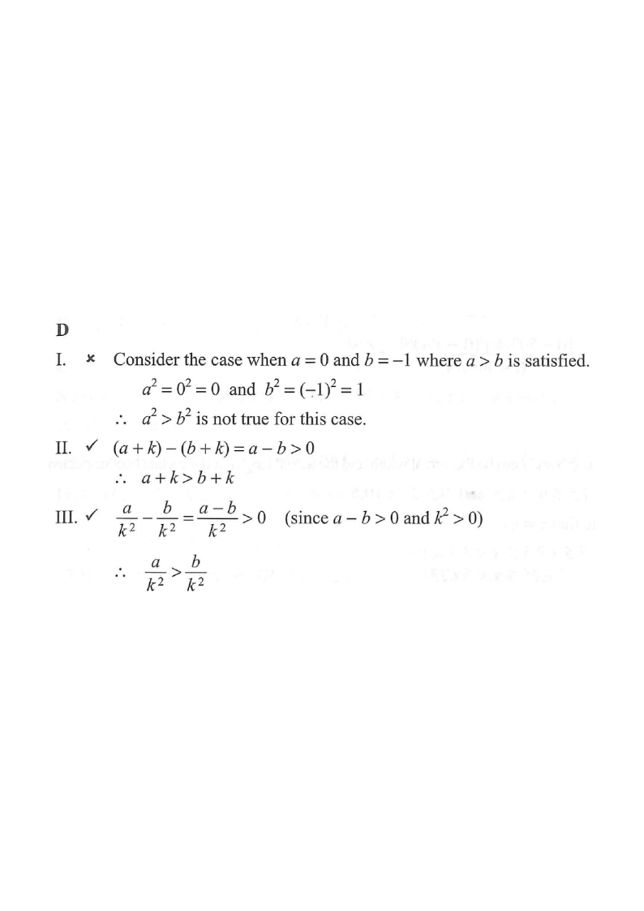

Scroll the solution on the right — the figure updates.
HKDSE 2014 · Paper 2 · Q6
Question. If $a>b$ and $k<0$, which of the following must be true?
$a+k>b+k$
$a^2>b^2$
$ak>bk$
A. I only
B. II only
C. I and III only
D. II and III only

Figure (original exam diagram)
Step 1
Read off the given information
We are given two facts about the real numbers $a,\,b,\,k$:
$$a>b \qquad\text{and}\qquad k<0$$
Hint: everything follows from these two facts alone — no other value of $a,b,k$ is forced.
Step 2
Test statement I: $a+k>b+k$ — adding the same number
Starting from $a>b$, subtract $b$ and $k$ from both sides (or simply add $k$ to both sides):
$$a>b \;\Longrightarrow\; a+k>b+k .$$
Adding (or subtracting) the same quantity to both sides of an inequality never
Addition Property of Inequalities\(a>b\ \Rightarrow\ a+c>b+c\)Adding the same number \(k\) to both sides of \(a>b\) keeps the inequality, whatever the sign of \(k\) is.
reverses the sign — true for any $k$, positive or negative.
✔ Statement I must be true.
Hint: think of a balance scale — adding equal weights to both pans keeps the tilt.
Step 3
Test statement II: $a^2>b^2$ — squaring an inequality
Squaring is not a safe operation when signs are unknown. Try a counter-example:
$$a=-1,\quad b=-3 \quad(\text{so } a>b)$$
$$a^2=1,\qquad b^2=9 \quad\Longrightarrow\quad 1 \not> 9 .$$
So $a^2>b^2$ can fail.
✘ Statement II is NOT necessarily true.
$a$
$b$
$a>b$?
$a^2$
$b^2$
$a^2>b^2$?
3
1
✔
9
1
✔
−1
−3
✔
1
9
✘
1
−5
✔
1
25
✘
Hint: squaring stretches negatives — a “bigger” negative number becomes a bigger positive square.
Step 4
Test statement III: $ak>bk$ — multiplying by a negative number
Here $k<0$. Multiplying $a>b$ by the negative number $k$ reverses
Multiplication by a Negative Number\(a>b\ \text{and}\ k<0\ \Rightarrow\ akSince \(k<0\) here, multiplying \(a>b\) by \(k\) reverses the sign, so \(akbk\).
the inequality sign:
$$a>b \;\Longrightarrow\; ak \;<\; bk .$$
In fact $ak>bk \iff (a-b)k>0$, which would need $k>0$ — contradicting the given $k<0$.
✘ Statement III is NOT true (in fact the reverse is true).
Example: $a=3$, $b=1$, $k=-2 \Rightarrow ak=-6$, $bk=-2$, and $-6<-2$.
Step 5
Conclude
Only statement I must be true.
Therefore the answer is A (I only).
Hint: “must be true” needs an inequality rule that holds for every allowed value — test I, II, III in turn.
Answer: A (I only)
PRACTICESimilar question — try it yourself
Question. If \(pI. \(p+rqr\) A. I only B. II only C. I and III only D. II and III only (1 mark)
Show the worked solution
Step 1. Statement I: adding the same number \(r\) to both sides of \(p so I must be true.
Step 2. Statement II: squaring can reverse the order. Take \(p=-3\), \(q=-1\): then \(p1=q^{2}\), so II can fail.
Step 3. Statement III: multiplying \(p giving \(pr>qr\), so III must be true.